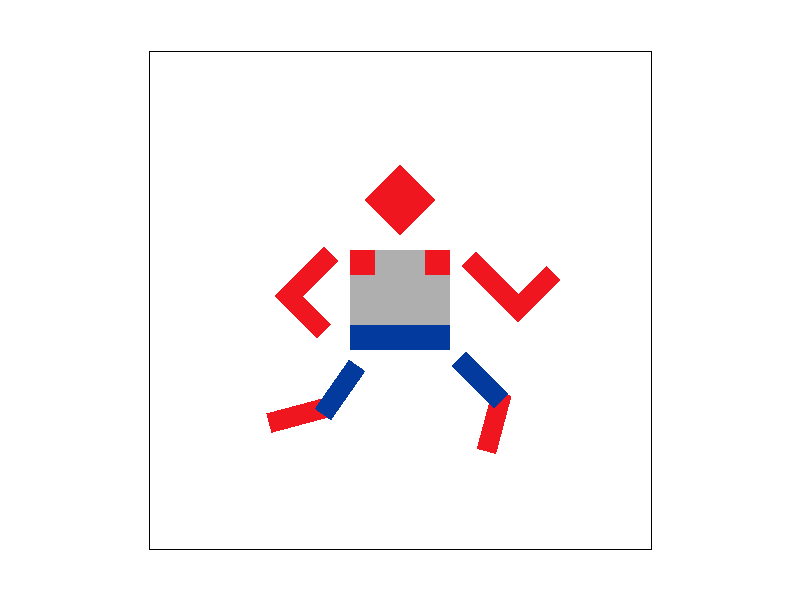

Overview
In this project we implemented basic triangle rasterization, which is the process of drawing a triangle onto the screen, given the verteces of the triangle. We also explored several methods of implementing antialiasing including super sampling and mipmaping. The mipmaping was used specifically on triangles where textures were being applied to them. These textures involved implementing conversions to and from barycentric coordinates, which we were also able to use to blend colors together in a triangle. This is the basic foundations of computer graphics which will allow us to explore more complicated topics later in the course.
Section I: Rasterization
Part 1: Rasterizing single-color triangles
| Figure 1.a | Figure 1.b |
| Figure 1.c | Figure 1.d |

|
Our initial approach was to check every pixel on the screen when drawing a triangle. To check if any pixel is in a triangle with points (x0,y0), (x1,y1), and (x2,y2). We built a matrix of lines perpendicular to the lines of the triangle
\[\large{ \begin{bmatrix} y_0 - y_1 & x_1 - x_0 & 0 \\\\ y_1 - y_2 & x_2 - x_1 & 0 \\\\ y_2 - y_0 & x_0 - x_2 & 0 \end{bmatrix} }\]The third row was only there because CGL only had 2x2 or 3x3 matricies. Then to see if any given point was in the triangle we just had to dot product its position with this matrix (of course becuase the matrix was 3x3 we had to add an extra point to the position of the pixel. We just made this 0). If all the values in the resulting vector were positive, then the point was in the triangle. With this matrix built we tested ran this on every single point in the buffer for each triangle. This unfortunately didn't work. No triangles were drawn in any picture. After looking over the lecture slides again we deteremined that the there was an error in the matrix that we constructed. It didn't take into account the fact that these parallel lines were centered on verticies of the triangle but the pixel coords were centered on the corner of the buffer. To remedy this we changed the matrix to look like this
\[\large{ \begin{bmatrix} y_0 - y_1 & x_1 - x_0 & -(x_0y_1 + y_0x_1) \\\\ y_1 - y_2 & x_2 - x_1 & -(x_1y_2 + y_1x_2) \\\\ y_2 - y_0 & x_0 - x_2 & -(x_2y_0 + y_2x_0) \end{bmatrix} }\]We also had to change the third point in the pixel coord to be 1 rather than 0. We this completed, we ran it again and achieved what you see in Fig 1.a and Fig 1.b. Only some of the triangles were being drawn. We realized it was because we never considered what order the points were in. If the three points of the triangle were passed in counter-clockwise order then the function worked as intended. If it was clockwise then it didn't work.
Our first approach to fix this was to create a helper function to reorder the points in the triangle to be counter-clockwise before rasterizing them. We could not quite get this to work, and our images still looked somewhat like Fig 1.a and 1.b. After this we realized that we could rasterize all triangles more simply by considering points where the dot product with our matrix contained all negative values or all positive values. This was because clockwise triangles would produce a dot product of all negative points if a point was inside of the triangle. If a point was outside the triangle, the dot product would be some combination of positive and negative values regardless of if the points were clockwise or counter. Doing this allowed use to make Fig 1.c and Fig 1.d.
Now this was working but it was running very slow. This was because we were still checking every pixel on the screen for every triangle we were trying to watch. We changed this to only check the bounding box of the triangle. Finding the bounding box was as simple as taking the floor of the lowest x and y coords of the triangle and the ceiling of the highest x and y coords. Once this was done, it ran much faster and still was able to fill in all the triangles as intended.
One final thing to note about what this rasterization can accomplish is that it produces a lot of jaggies. You can see in the zoom in box at the top right of Fig 1.d how bad the jaggies are on the thin red triangle in the center. We will resolve these issues in the next section.
Part 2: Antialiasing triangles
Supersampling is when you sample each frame buffer pixel more than once
in order to take the average of all the sample's colors to determine
the frame buffer pixel's color. Supersampling is used to antialias
the triangles, and is useful for getting rid of jaggies and other artifacts.
In our supersampling algorithm, we performed the in-triangle tests with sampling_rate
amount of sample points in the frame buffer pixel. To do this, we used coordinates equal to the pixel's
coordinates plus 1/sqrt(sampling_rate). In doing that, we were able to sample
the sample rate amount of pixels from the sample buffer per each frame buffer pixel.
|
|
Figure 2.a shows the result of successful supersampling, but with an unsuccessful incrementation through the frame and sample buffer. We were successfuling sampling with the correct sample rate, but we were not moving the bounding box correctly. We fixed this by factoring in the sample rate into the bounding box.
|
|
|
|
|
|

|
Part 3: Transforms
Introducing Jortson! He is a cubeman who loves jorts and to run. We
gave him some jorts and a tank top by adding polygons with assigned
colors that correspond to the item of clothing in the SVG file. We
also put Jortson in a running position by chaging the translation
and rotation transformations.

We were able to make a GIF of Jortson spinning by taking multiple
screenshots of Jortson where in each frame he is rotated to the
right. We rotated Jortson by using the 'E' hotkey we implemented
as part of the two extra features we added to the GUI, as detailed
below under "Extra Credit".
Extra Credit:
We added 'Q' and 'E' as hotkeys which rotate the viewport to the
left and right respectively. To do this, we added a case for both
keys in the DrawRend::keyboard_event method. For both
cases, we iterated through the SVG's elements and updated the
elements' tranform attribute to be the current transform matrix
times the rotational matrix given from rotate. For 'Q',
we rotated 15 degrees (counter-clockwise), and for 'E', we rotated
-15 degrees (clockwise).
Section II: Sampling
Part 4: Barycentric coordinates
In lecture we were given equations for calculating barycentric coordinates. We decided to convert these equations into a matrix so that all we had to do was to dot the homogeneous coordinate of a pixel with the conversion matrix to get the barycentric coordinates. \[\Large{ \begin{bmatrix} \frac{y_1 - y_2}{P_\alpha} & \frac{x_2 - x_1}{P_\alpha} & \frac{x_1y_2 - y_1x_2}{P_\alpha} \\ \frac{y_2 - y_0}{P_\beta} & \frac{x_0 - x_2}{P_\beta} & \frac{x_2y_0 - y_2x_0}{P_\beta} \\ \frac{(y_2 - y_1)P_\beta \ + \ (y_0-y_2)P_\alpha}{P_\alpha P_\beta} & \frac{(x_1 - x_2)P_\beta \ + \ (y_2-y_0)P_\alpha}{P_\alpha P_\beta} & \frac{P_\alpha P_\beta \ - \ (x_1y_2 - y_1x_2)P_\beta \ + \ (x_2y_0-x_0y_2)P_\alpha}{P_\alpha P_\beta} \end{bmatrix} } \]The two \(P\) terms are just short hand for the following two expressions
\[ P_\alpha = (y_0-y_1)(x_2-x_1) - (x_0 - x_1)(y_2 - y_1) \] \[ P_\beta = (y_1-y_2)(x_0-x_2) - (x_1 - x_2)(y_0 - y_2) \]With this expression in hand we were now able to interpolate the colors. For each pixel we took the dot product of its homogeneous coordinate with this matrix. This gave us its barycentric coordinate. We then multiplied each of these barycentric coordinates with the color corresponding with that corner. Because barycentric coordinates all add to one, doing this is like taking a weighted average. This allowed us to create Fig 4.
|
|
Part 5: "Pixel sampling" for texture mapping
Pixel sampling is when the sample buffer is sampled in order to
determine the color of the coorespoding pixel in the frame buffer.
We implemented two different methods of pixel sampling: nearest and
bilinear interpolation. Nearest pixel sampling is when only the
nearest pixel in the sample buffer is used to determine the color of
the pixel in the frame buffer. Bilinear interpolation pixel sampling
is when the color for the frame buffer pixel is determined by taking
the bilinear interpolation of the colors of the four nearest pixels
in the sample buffer.
In implementing both pixel sampling methods, we converted
(u,v) to texel space by multiplying u by
the MipLevel.width and multiplying v by
the MipLevel.height.
To implement nearest pixel sampling, we convert (u,v)
to texel space and simply floor the (u,v)
to get the corresponding nearest texel in the mipmap.
The pixel to be rasterized get the color of this one nearest texel.
To implement bilinear pixel interpolation sampling, we convert
(u,v) to texel space and round the
(u,v) to get the nearest texel. Then, we get the
3 nearest texels to this rounded (u,v) texel, clamping
them to the mipmap's width and
height in order to account for edge cases. Then, we
compute our s and t values for bilinear
interpolation, which are the x- and y- distances from the original
(u,v) point to the (u,v) texel points.
Finally, we do 3 lerps between the 4 nearest texels' colors to
determine the color of the pixel to be rasterized's color.
|
|
|
|
Figures 5.a and 5.b show the Campanile with two different pixel sampling methods. Figure 5.a is using the nearest pixel sampling method, and Figure 5.b is using the bilinear pixel interpolation sampling method. Clearly, bilinear pixel interpolation is the better sampling method here because it is more smoothed out.
|
|
|
|
|
|
|
|
Part 6: "Level sampling" with mipmaps for texture mapping
Level sampling is used for antialiasing for a simalar reason that supersampling is used. Each mipmap level has higher and higher frequencies taken out by averaging together more of the pixels. In order to determine which mipmap level to use, you need to calculate how the uv changes with changes in pixel location in the buffer. The faster uv is changing the higher the level of the mipmap should be used. This is because each pixel drawn will cover a larger area in the tecture and therefore does not need as much detail. The equation to calculate is from lecture and is as follows:
\[D = \log_2 L\] \[L = max\left(\sqrt{\left(\frac{du}{dx}\right)^2 + \left(\frac{dv}{dx}\right)^2},\sqrt{\left(\frac{du}{dy}\right)^2 + \left(\frac{dv}{dy}\right)^2}\right) \]With this level calculated there is still three options to be implemented. L_ZERO just uses the zeroth mipmap level no matter what. L_NEAREST uses the mipmap level closest to the one calculated with the equation above. L_LINEAR uses a linear combination of the two closest levels. We calculated the pixel color using both the floor and cieling of the level calculated and then used the difference between the level and its floor as the value to lerp the two colors together.

|

|

|

|
We had one main issue when implementing this where if we zoomed into an image a lot of the triangles would rasterize as magenta (Figure 6.e). The issue was because if the texture was too zoomed in, the change in uv with respect to the change in xy would be very small which would cause the level to be calculated as a negative number. We fixed this by forcing the level to be at least 0.

|
Section III: Art Competition
If you are not participating in the optional art competition, don't worry about this section!
Part 7: Draw something interesting!
Re-introducing Jortson! A new and improved cubeman who now has textured clothing, a face, and is running on a scenic trail with his buddy Aidan.
|
|
We re-used the svg file for our cubeman from procedure 3
and used CS184's TexTri class to add textures. We downloaded
a denim jpeg image, a t-shirt jpeg image, a cartoon face jpeg
image, and a scenic trail jpeg image and then resaved them all
as square png images. Then, we were able to replace the Polygons
describing Jortson with TexTris that applied the previously
mentioned images as textures.
Originally, we did not save the texture images as squares, so
when we applied the textures to Jortson's SVG, there were many
artifacts that showed the texture too stretched out and zoomed
in. So, we decided to save the texture images as sqaures so that
coordinating the uvs to the points
was simpler. After that, we then were getting a Moiré Pattern in
the clothing. We played around with the supersampling rate and
texture filtering methods on pixels and mipmap levels. We found
that the changing the supersample rate made the texture appear a
lot better, especially with a sample rate of 16. We also found
that using bilinear level and pixel interpolation made the texture
also appear a lot better while also loading faster than increasing
the sample rate. Additionally, using bilinear level and pixel
interpolation made the scenic trail background appear a lot better,
too.